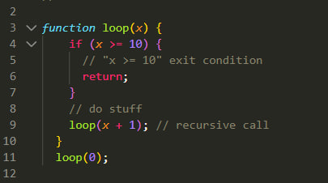

<!DOCTYPE html>
<html lang="en">

<head>
    <meta charset="UTF-8">
    <meta name="viewport" content="width=device-width, initial-scale=1.0">
    <title>Homework 9</title>
    <link rel="stylesheet" href="css/style.css">
</head>

<body>
    <!-- <div class="container">
        <h1>Рекурсія та вступ до теми функцій констркуторів</h1>
        <nav class="menu">
            <div class="menu__header">
                <div class="menu__toggle">Menu</div>
            </div>
            <ul class="menu__list">
                <li class="menu__item menu__item-recursion">
                    <a href="#" class="menu__link" data-target="key-combination__recursion">Рекурсія</a>
                </li>
                <li class="menu__item menu__item-constructor">
                    <a href="#" class="menu__link" data-target="key-combination__constructor">Функція конструктор</a>
                </li>
            </ul>
        </nav>
        <div class="key-combination">
            <div id="key-combination__recursion" class="key-combination__section">
                <div class="key-combination__content">
                    <div class="key-combination__text">
                        <p><span>Рекурсія</span> - це процес, коли функція викликає сама себе. У рекурсивних функціях завдання ділиться на більш прості підзавдання, і функція викликається для кожного з цих підзавдань до завершення всього завдання. Рекурсія базується на ідейному поділі та владному підкоренні проблеми.</p>
                    </div>
                    
                </div>
                <div class="key-combination__content">
                    <div class="key-combination__text">
                        <p>Будь-яка рекурсія може бути переписана за допомогою циклу. Варіант з використанням циклу зазвичай може бути більш ефективним.</p>
                    </div>
                </div>
            </div>
            <div id="key-combination__constructor" class="key-combination__section">
                <div class="key-combination__content">
                    <div class="key-combination__text">
                        <p><span>Функція-конструктор</span> - Дозволяє створити багато однотипних об’єктів, таких як, наприклад, користувачі чи елементи меню тощо.
                            Ім’я функції-конструктора повинно починатися з великої літери.
                            Функції-конструктори повинні виконуватися лише з оператором "new".</p>
                    </div>
                    
                </div>
                <div class="key-combination__content">
                    <div class="key-combination__text">
                        <p><span>Інкапсуляція Даних</span> - Конструктори також дозволяють досягнути інкапсуляції даних, тобто обмеження доступу до деяких властивостей об'єкта. Ми можемо використовувати приватні властивості та методи для збереження даних та додаткової логіки в межах об'єкта.</p>
                    </div>
                    
                </div>
            </div>
        </div>
    </div> -->


    <!-- <script src="js/main.js"></script> -->
    <script src="js/homework.js"></script>
</body>

</html>